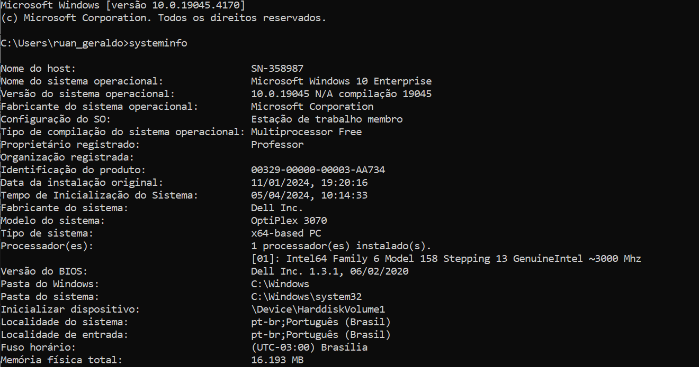

Comandos CMD
20 Comandos Principais:
- dir - Lista os arquivos e pastas no diretório (pasta) atual;
- cd ou chdir - (Change Directory) - Muda o diretório atual;
- mkdir - (Make Directory) - criar um novo diretório;
- copy - Copia arquivos de um local para outro;
- del - Exclui um arquivo;
- ren - Renomeia um arquivo;
- notepad - abre o editor de texto do windows;
- write - abre o wordpad;
- type - Exibe o conteúdo de um arquivo de texto;
- cls - limpar a tela, removendo o histórico de comandos;
- echo - Exibe mensagens ou ativa/desativa o eco de
comandos;
- ipconfig - Exibe informações de configuração de rede;
- ping - Testa a conectividade com um endereço IP;
- tracert - é usado para rastrear a rota que os pacotes de dados
fazem da sua máquina até um destino especificado na rede;
- netstat - exibe uma lista das conexões de rede ativas;
- tree /f - Exibe a estrutura de diretórios da pasta atual;
- ver - Exibe a versão do Windows;
- attrib - Exibe ou modifica atributos de arquivos e diretórios;
- dir /s - Exibe uma lista completa de todos os arquivos no
diretório atual e em todos os subdiretórios;
- dir /a /q - Exibe para mostrar todos os arquivos, incluindo os
ocultos, além informações detalhadas do proprietário do
arquivo;
